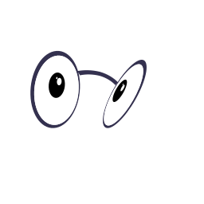
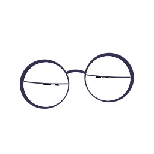

Alive at rest
Breathing, saccades, blinks, eyebrows and a gaze that follows your cursor. Every move anticipates, overshoots and settles.
The matte animation kit
Meet Geeky. Original eyes, matte indigo frames, and a whole personality: tap to get a reaction, try an animation, and watch it turn into bikes, binoculars and atoms.
Plain SVG or Three.js · Editable vectors · Transparent exports
New · Geeky Live
Would you like help? Geeky Live is an interactive companion in the spirit of Office’s Clippy — with better taste in eyewear.
Breathing, saccades, blinks, eyebrows and a gaze that follows your cursor. Every move anticipates, overshoots and settles.
Poke it, fling it, spin it in 3-D. The frames swing, stretch and squash; five quick clicks make it dizzy.
Reads along as you type, offers help with letters, notices copies, scrolling, idling and hovering data-geeky-tip.
A retained-mode SVG renderer and a Three.js renderer share one choreography engine, so every action exists in both.
createGeekyAssistant({THREE: () => import('three')}) — or createGeekyLive(el) for a single interactive character.
Choose an expression
Start with a vector, an animated image, or a transparent sprite sheet. These previews are stills; open the demo to see them move.
idle
running-right

running-left
waving
jumping
failed

waiting
running
review
Sixteen gazes, a neutral avatar, and exact dimensions and timing in the manifest.
Make it yours
Use the ready-made player or build on the editable motion rig. The player respects reduced-motion preferences.
The illustrated guide covers the character, motion, files, and integration choices.
Open PDF guide ↗Editable DOCX ↗Watch the showcase ↗Play states, control gaze and speed, pause, or export the current SVG pose.
Vanilla JavaScript example ↗Player API reference (Markdown) ↗Download browser player ↗Try the mobile WebView bridge and choose the right asset format for your app.
WebView example ↗Asset reference (Markdown) ↗Validation scope (Markdown) ↗